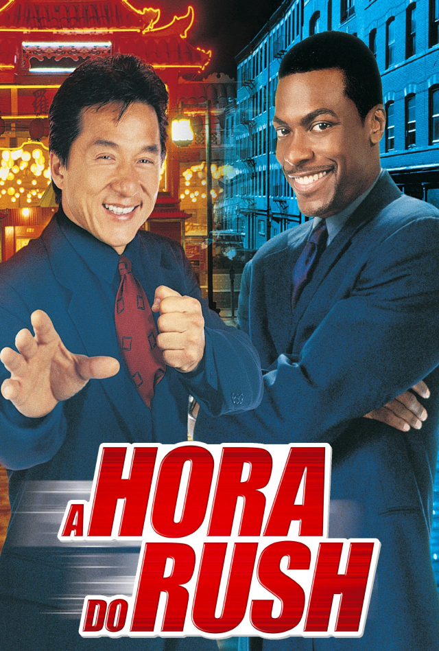

A hora do Rush (1998)

Direção: Brett Ratner
Distribuição: New Line Cinema
Lançamento:
 18 de setembro de 1998
18 de setembro de 1998
 23 de outubro de 1998
23 de outubro de 1998  ASSISTIR
ASSISTIR
Personagens

Direção: Brett Ratner
Distribuição: New Line Cinema
Lançamento:
18 de setembro de 1998
23 de outubro de 1998 ASSISTIR